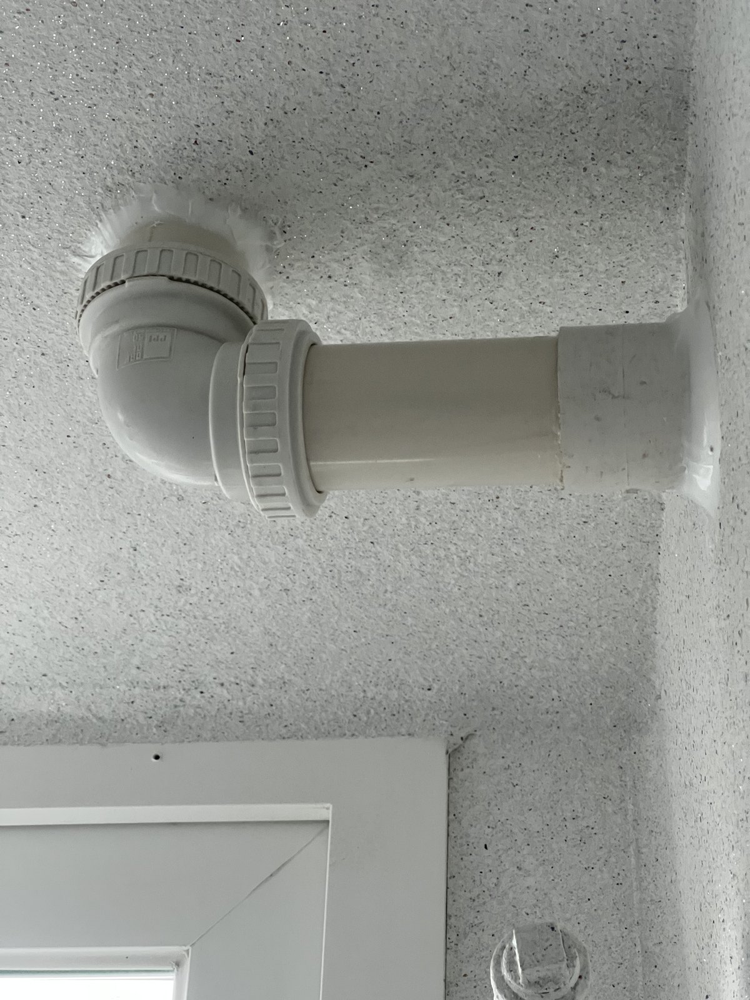
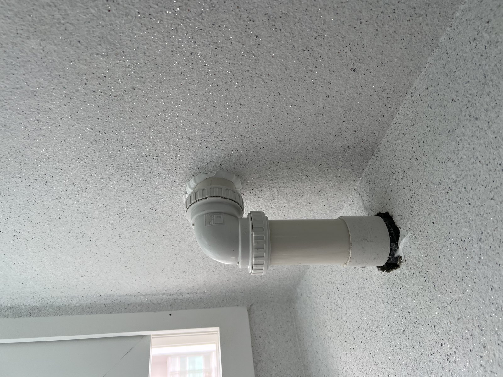
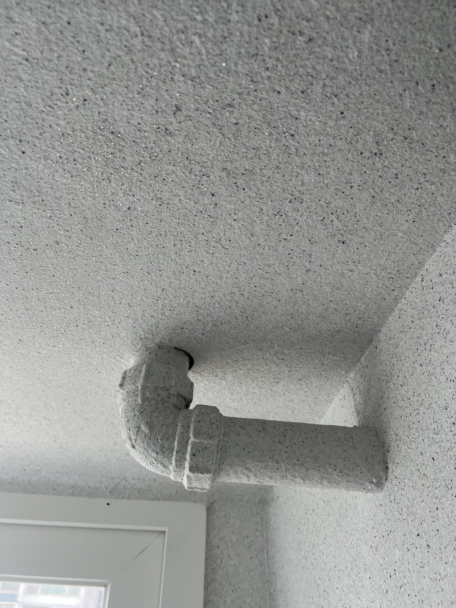

대전 무궁화아파트 배관 교체, 새 연결부와 관통부를 가까이 보기

작업 핵심
현장 작업 한눈에 보기
- 현장
- 대전 무궁화아파트 배관
- 문제
- 교체 후 연결부·관통부 기록
- 작업
- 새 관과 연결 부속 설치
- 결과
- 교체 후 배관·주변 마감 사진
철거 전·시험 결과는 미확인
무궁화아파트에서 배관을 교체한 뒤의 모습입니다. 새 관이 꺾여 이어지는 부분과 구조체를 통과하는 위치를 나누어 소개합니다.
이번에는 교체 후 사진을 소개합니다
대전 무궁화아파트 배관 교체 현장입니다. 남아 있는 사진은 새 배관을 설치한 뒤의 모습입니다.
철거 전 상태를 추측하기보다는 어떤 연결부를 설치했는지 중심으로 보여 드리겠습니다.
1. 직선관과 꺾임 부속 연결
직선 배관이 꺾임 부속을 통해 이어집니다. 가까이 보면 나사식 연결부가 맞물린 위치도 보입니다.
배관의 방향을 따라가며 새 관과 부속이 만나는 부분을 살펴보세요.

2. 구조체를 지나는 관통부
다음 사진은 배관이 구조체를 통과하는 자리입니다. 배관 끝과 주변 마감을 한 화면에 담았습니다.
연결 부속 근접 사진에 이어 관이 어디로 지나가는지 확인할 수 있습니다.

비슷한 배관이라도 범위는 다릅니다
이 현장은 교체 후 연결부와 관통부를 중심으로 소개했습니다. 사진만으로 다른 현장의 누수 원인까지 같다고 판단할 수는 없습니다.
교체를 상담하실 때는 배관 전체와 문제가 보이는 부분을 함께 보여 주세요.